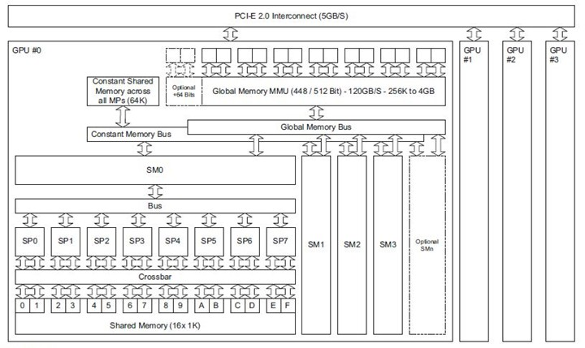

小喵的唠叨话：没想到研究生的生活这么繁忙，居然还有考试。小喵都快累成狗了。终于稍微闲下来一点了，开始继续写博客。这次的题目，其实是差不多一个月之前就想好的，但是一直碰到许多的事情，就耽搁了。
这片文章主要介绍一下GPU的硬件结构。
首先，给大家看一张示意图（图片资源来自网上）。

这里，我们主要了解需要有以下几个认识：
1，一个主机可以有多个GPU
像我们一般的PC机，就大多数有集显和独显。一般的运算服务器，也是可以一个机器上有多显卡。不同的主板上的有不同数目的显卡的插槽，需要强大的计算性能就可以考虑多卡的结构。当然电源和散热可能就会成为新的问题。
2，SM(Streaming Multiprocessors) and SP(Stream Processor)
GPU是一种SPMD（single program, multiple data）的工作方式是SIMD（Single Instruction Multiple Data）的一个升华。在同一时间，多个处理器运行同一套程序，但是处理的数据可以不同。这样带来的效果就是，如果简单的重复的任务特别多的话（比如向量的加法），GPU可以在同一时间处理多条数据。而且每个处理器需要处理的程序是相同的，因此只需要一次指令的取操作，所有处理器可以共同执行，效率上大大提高了。 流处理器簇（SM）的概念与CPU的核心类似，GPU的程序的执行单位就是SM，GPU的SM的数目通常有15-16个，一个SM中包含了多个SP，通常是32个，SP是实际的执行单元。对于一堆任务，GPU会按照以32个为一个单位分配到每个SM中执行。 举个例子，对于向量的加法，假设有两个向量长度分别为1024，每个SP都执行一个加法，那么一共会有1024/32=32批任务，如果每个GPU有16个SM，则每个SM被调用了32/16=2次。不考虑内存读写，指令优化，或其他的延时，只考虑计算时间。那么可以理解该次计算只需要2个计算的周期（切记，这里有取指令，取数据，运算和写数据的各种时间）。而对于一个四核的CPU机器而言，需要1024/4=256次计算周期。100倍的差距。
3，内存
GPU的内存通常称为显存，是GPU上高速读写的存储介质，功能上和PC的内存类似。但GPU上的内存分为多种，具体有：寄存器内存，共享内存，全局内存，纹理内存，常量内存。看到这么多种内存，有没有和小喵一样目瞪口呆？
下面表格里是内存的带宽和延时
| Storage Type | Registers Shared Memory | Texture Memory | Constant Memory | Global Memory |
|---|---|---|---|---|
| Bandwidth | ~8 TB/s ~1.5 TB/s | ~200 MB/s | ~200 MB/s | ~200 MB/s |
| Latency | 1 cycle | 1 to 32 cycles | ~400 to 600 | ~400 to 600 |
寄存器内存
读写最高效的内存，在CPU上，可用的寄存器内存微乎其微。
于是小喵专门Google了一下：
Registers are memories located within the Central Processing Unit (CPU). They are few in number (there are rarely more than 64 registers) and also small in size, typically a register is less than 64 bits in size.[1]
但是GPU上，每个SM就提供了至少8192个寄存器！也就是说，如果一个SM上只运行32个线程，平均每个线程可以得到8192/32=256个寄存器（虽然通常不会只运行这么少的线程）。
GPU为了能够高效的工作，在粗细两个粒度对内存和任务进行管理。合理的使用各种内存可以使自己的程序更加高效。
共享内存
顾名思义，是指数据能够共享的一块内存。该内存主要在每个SM内部，同一个SM中的所有的SP都可以访问该块内存。而且读写速度仅次于寄存器内存，因此在线程间进行通信用共享内存最适合不过了。
全局内存
在整个GPU上，任何部件都能访问的内存，我们平时说的显存1G等等的就是说的全局内存。全局内存是GPU上最大的内存，也是我们最常打交道的内存。相比于寄存器内存和共享内存，全局内存的读写速度慢了几个数量级。所以我们在设计GPU的程序的时候，要尽量充分利用寄存器内存和共享内存，才能设计出高效的程序。
常量内存
存放常量，大小通常是32K（本质上和L2缓存共享了内存，可以通过API修改模式）。
纹理内存
这个现在的作用比较少了，但功能很特殊，在后面会详细介绍。 以上就是GPU的硬件结构的简单介绍。感兴趣的同学可以访问NVIDIA的官网，获取更多的信息。